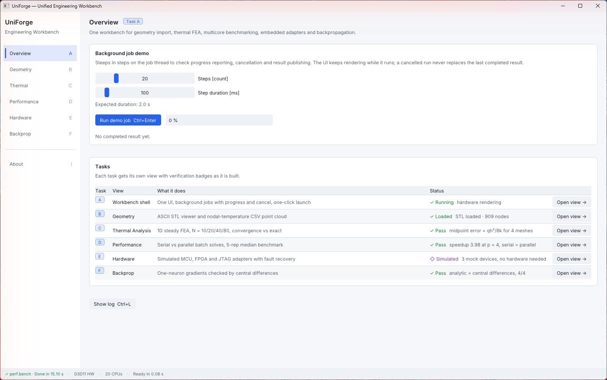
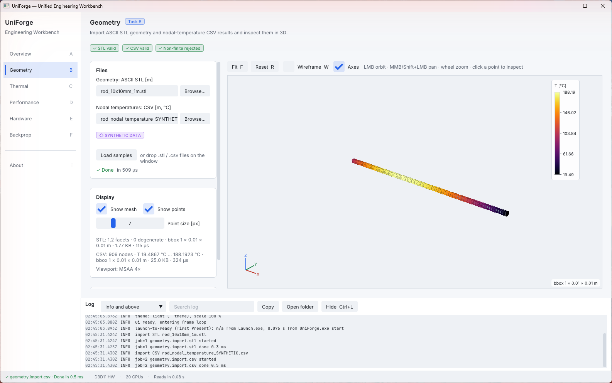
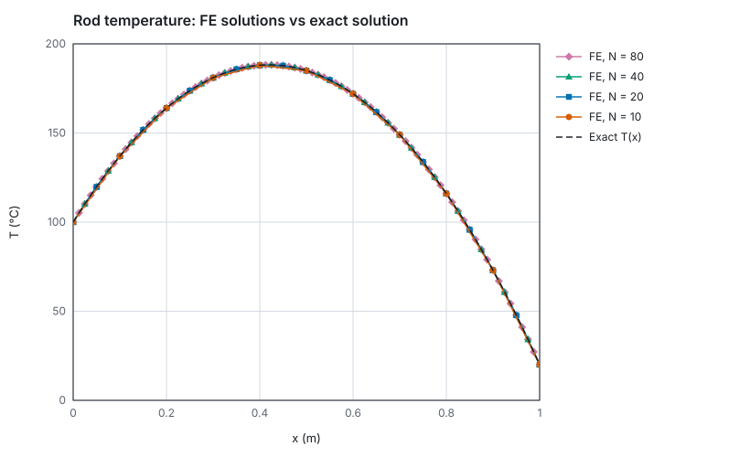
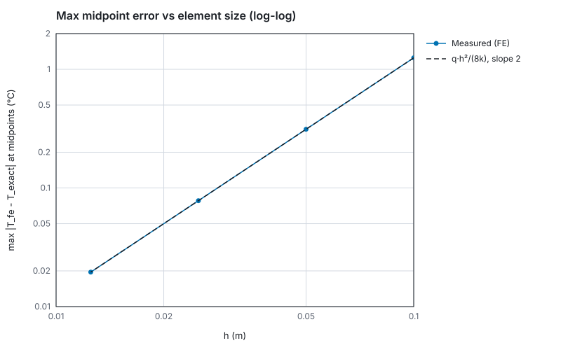
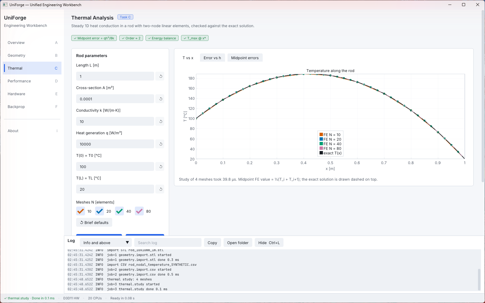
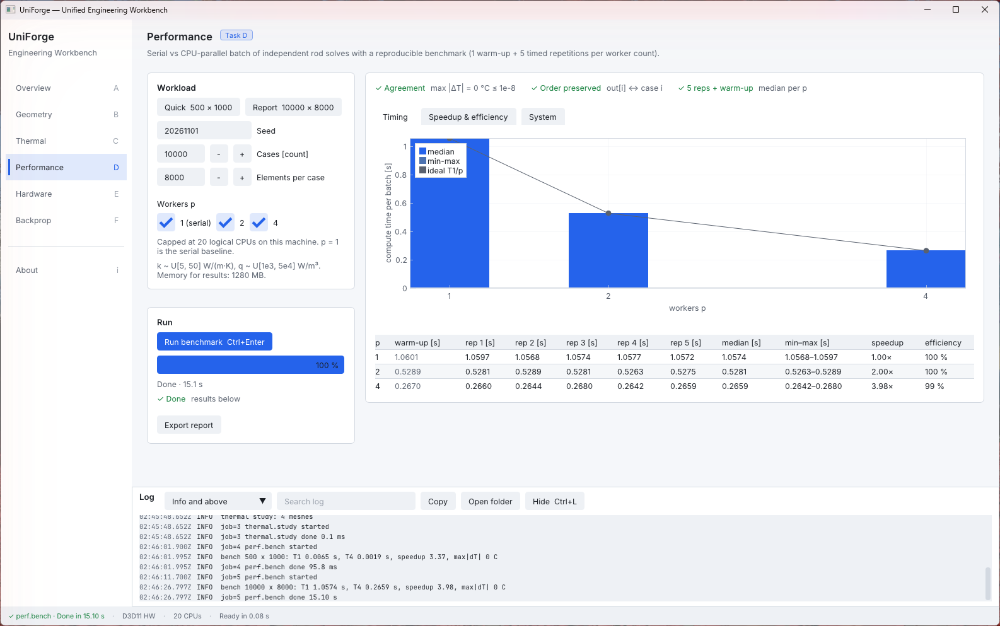
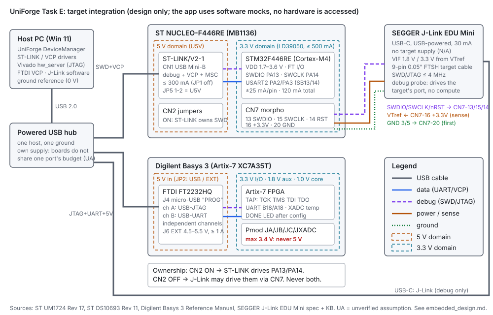
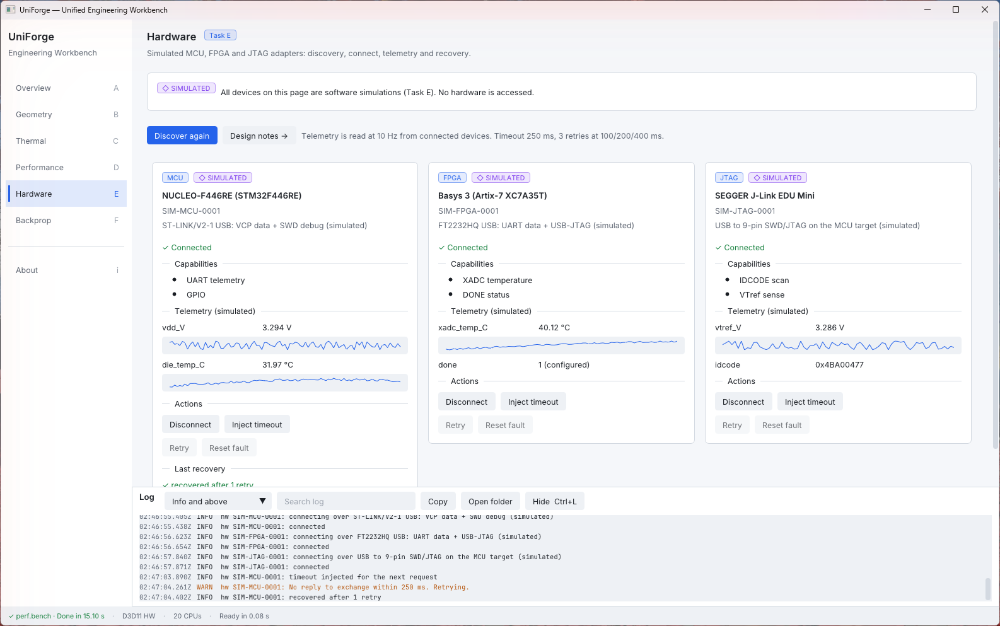
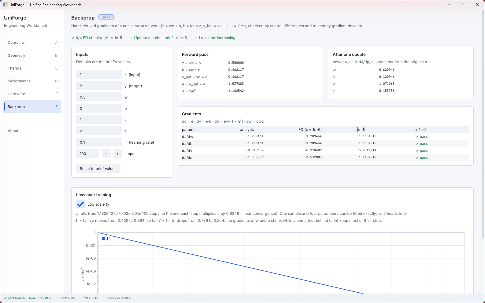

Launch.exe, needs no
installer or runtime, and is ready in about 0.13 s. Every number in this report is generated by
the shipped tool app\uniforge_cli.exe and committed under results/; 289
automated tests pass on Windows (MSVC) and the portable core also builds and passes under
ASan/UBSan and TSan on Linux (GCC 13) in CI.
tools/package.ps1 checks this with dumpbin /dependents.core/ is portable standard C++ with no UI or OS headers
(thermal, io, perf, hw, ml); services/ runs work off the UI thread; views only draw.
The same core powers the GUI and the CLI, so the GUI shows exactly what the evidence files contain.shared_ptr publish: the UI never blocks, and a cancelled or failed job keeps
the previous result.Result<T> with an
ErrorCode, a message and a hint (for files: the line number). No exceptions cross
module boundaries.%LOCALAPPDATA%; a crash handler writes
logs/crash_<pid>.txt. All three were tested on the package
(results/edge_cases.md).%.17g precision and a .meta.json sidecar (version, commit, inputs);
golden-file tests prove the CLI regenerates them byte for byte.A streamed line reader (64 KB buffer; LF/CRLF; UTF-8 BOM) feeds an ASCII STL parser and a nodal-temperature CSV parser. Both validate every value (non-finite, overflow, vertex count, duplicate node ids, temperatures below absolute zero) and fail with a typed error naming the line. 37 malformed fixtures are covered by negative tests. Limits are enforced before memory is committed and were measured on the target machine:
| File | Elements | Size (MB) | Parse (s) | MB/s | Peak memory (MB) |
|---|---|---|---|---|---|
| ASCII STL | 1 000 000 | 248.0 | 0.998 | 248 | 145 |
| ASCII STL (limit) | 2 000 000 | 496.0 | 2.008 | 247 | 324 |
| CSV nodes (limit) | 5 000 000 | 274.9 | 1.340 | 205 | 386 |
The Geometry view renders the mesh (flat shading, optional wireframe, MSAA 4×) and the nodes as
an inferno-coloured point cloud with a °C legend; clicking picks the nearest node within 6 px.
The sample rod STL is generated geometry; the temperature CSV is synthetic and labelled as
such in the file name, the UI and data/PROVENANCE.md.


Steady 1D conduction, −kA·T″ = qA on 0 ≤ x ≤ L with T(0) = 100 °C, T(L) = 20 °C,
L = 1 m, A = 1e-4 m², k = 10 W/(m·K), q = 1e4 W/m³. Two-node linear elements give
k/h·[1 −1; −1 1] and qh/2·[1 1]; the global matrix is tridiagonal and symmetric. Dirichlet values
are applied by symmetric elimination (known temperatures moved to the right-hand side), so
the reduced matrix stays SPD and irreducibly diagonally dominant and the Thomas algorithm
solves it in O(N) without pivoting. The exact solution
T(x) = T0 + (TL − T0)x/L + q x(L − x)/(2k) peaks at 188.2 °C at x = 0.42 m.
| N | h (m) | max midpoint error (°C) | qh²/8k (°C) | ratio | order | max nodal error (°C) | energy residual (W) |
|---|---|---|---|---|---|---|---|
| 10 | 0.1 | 1.250000 | 1.25 | – | – | 2.8e-14 | 2.2e-16 |
| 20 | 0.05 | 0.312500 | 0.3125 | 4.0000 | 2.0000 | 2.0e-13 | 1.1e-15 |
| 40 | 0.025 | 0.078125 | 0.078125 | 4.0000 | 2.0000 | 8.8e-13 | 5.1e-15 |
| 80 | 0.0125 | 0.019531 | 0.01953125 | 4.0000 | 2.0000 | 1.2e-12 | 8.7e-15 |
Why these numbers. For a quadratic exact solution, linear elements are nodally exact in
1D, so nodal errors are round-off only. Between nodes the FE solution is the linear interpolant,
whose error at each midpoint is exactly q h²/(8k): halving h divides it by 4 (order 2). The
energy balance (heat generated = heat leaving both ends, from the unconstrained boundary rows)
closes to 1e-14 W. These are checked by 61 numerical tests, including a dense Gaussian-elimination
oracle. A deliberate fault injection (dropping the T0 contribution in the boundary
elimination) still passed the boundary-value checks but failed 18 tests and showed an energy residual
equal to the missing term, which is why the energy balance is a release check
(docs/thermal_fea.md §5, debugging log).


A batch of independent rod problems (k, q drawn from a portable seeded RNG so the batch is
identical on MSVC and GCC) is solved serially and with a bounded pool of p std::threads.
Workers take chunks of max(1, cases/(8p)) from an atomic index and write only their own result
slots, so there is no locking and results stay in case order. Protocol: 1 warm-up + 5 timed
repetitions per p, median reported with min–max; serial and parallel results are compared on every
node of every repetition.
| p | median (s) | min–max (s) | speedup | efficiency |
|---|---|---|---|---|
| 1 | 1.0732 | 1.0700–1.0742 | 1.00 | 100 % |
| 2 | 0.5353 | 0.5337–0.5386 | 2.00 | 100 % |
| 4 | 0.2686 | 0.2661–0.2746 | 4.00 | 100 % |
10 000 cases × 8 000 elements, seed 20261101; Intel i5-14600K (6 P + 8 E cores, 20 logical CPUs), Windows 11, MSVC 19.44 /O2. max |ΔT| serial vs parallel = 0 °C (bitwise equal).
Why near-ideal. Each case is O(N) work with no communication; the only shared state is the chunk counter (32 chunks at p = 4). The per-worker working set (~0.45 MB) fits in a P-core's 2 MB L2, and the only DRAM stream is the 640 MB result write (~2.4 GB/s at p = 4), so the run is compute-bound. Limits: single-core turbo makes T1 relatively fast (understating efficiency); under load a worker may land on an E-core (an earlier loaded run gave S(4) = 3.88); beyond 6 threads hyper-threading and E-cores would lower efficiency for reasons unrelated to the code. Thread start/join costs < 0.1 % here, which is why the small preset is not used for the report.


Design for a host PC talking to an ST NUCLEO-F446RE (ST-LINK/V2-1: SWD + virtual COM
port), a Digilent Basys 3 (FT2232HQ: USB-UART + USB-JTAG) and a SEGGER J-Link EDU Mini
(SWD to the Nucleo's STM32F446). docs/embedded_design.md gives the power, voltage-domain,
I/O-level, connector and debug-signal table with a citation for every value (user manuals and
datasheets S1–S6; unverified assumptions marked UA), a block diagram, and the safety rules: common
ground first, never drive a Basys 3 Pmod above 3.4 V (no 5 V Nucleo signal to a Pmod without a
level shifter), the J-Link supplies no target power and follows VTref.
The C++ side defines one IDeviceAdapter interface with a state machine
(Disconnected → Connecting → Connected → Faulted → Recovering) and a retry policy (250 ms timeout,
3 retries after 100/200/400 ms). The three adapters run on a mock transport with injectable faults
(timeout once/always, disconnect); no hardware is accessed and every card is labelled
SIMULATED. Telemetry is polled at 10 Hz on a device thread; recovery is logged ("recovered after
1 retry").

docs/embedded_design.md).Network: z = wx + b, h = tanh z, ŷ = vh + c, J = ½(ŷ − y)² with x = 1, y = 2, (w, b, v, c) =
(0.5, 0, 1, 0), learning rate 0.1. With e = ŷ − y: ∂J/∂v = e·h, ∂J/∂c = e,
∂J/∂w = e·v·(1 − h²)·x, ∂J/∂b = e·v·(1 − h²). The full derivation is in my handwritten
appendix (docs/appendix_handwritten/).
| param | analytic | central difference (ε = 1e-6) | |diff| | ≤ 1e-5 |
|---|---|---|---|---|
| w | −1.2094645 | −1.2094645 | 1.1e-10 | pass |
| b | −1.2094645 | −1.2094645 | 1.1e-10 | pass |
| v | −0.7106820 | −0.7106820 | 5.3e-11 | pass |
| c | −1.5378828 | −1.5378828 | 1.1e-10 | pass |
Training with simultaneous updates drives J from 1.1825 to 1.7e-20 in 100 steps; on a log scale the decay is linear (geometric convergence), since one sample with four parameters can be fitted exactly.


| Suite | Tests | Covers |
|---|---|---|
| unit | 145 | writers, RNG, element matrices, parsers, camera/picking, formatting, adapters, job runner, worker pool |
| numerical | 61 | FEA vs exact and dense oracle, convergence order, energy balance; serial = parallel; backprop values and FD check |
| negative | 69 | 37 malformed STL/CSV fixtures, invalid FEA and backprop inputs, device faults and recovery |
| integration | 14 | CLI regenerates committed evidence byte for byte; import → render-model pipeline; study job and exports |
CI (GitHub Actions) builds with /W4 /WX on windows-2022 and runs the core under
ASan/UBSan and TSan on ubuntu-24.04. The package script runs the tests, the dependency check and a
hygiene scan (no absolute paths, e-mail addresses or secrets in 485 files). Manual testing of the
package found three UI defects that the tests missed (an ImGui ID clash, a clipped progress bar,
and action buttons disabled by the telemetry tick); all were fixed before release.
AI assistance (Claude Code, Claude Opus 5.5) was used for analysis, code, tests and
documentation, under my direction: I chose the design from three alternatives, set and re-planned
the phases, reviewed every phase before it reached main, and tested the package myself.
The handwritten derivation is my own work. Details, including incorrect AI output and how it was caught,
are in docs/ai_usage_log.md; original vs reused work is in docs/ownership.md;
hours per phase are in docs/effort_log.md.